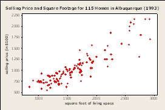
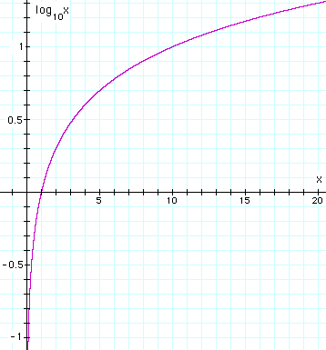
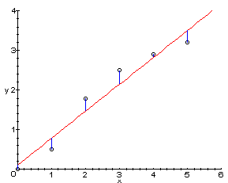
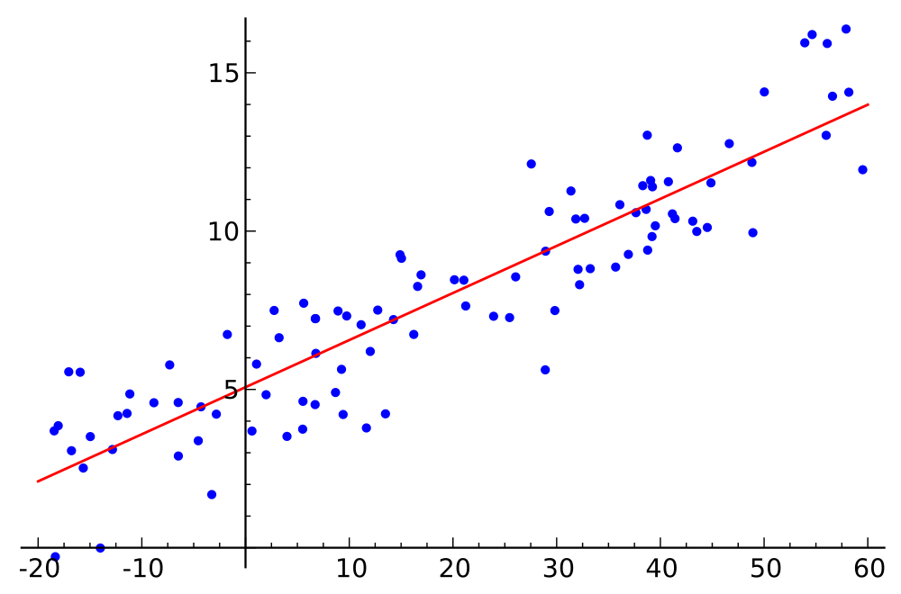
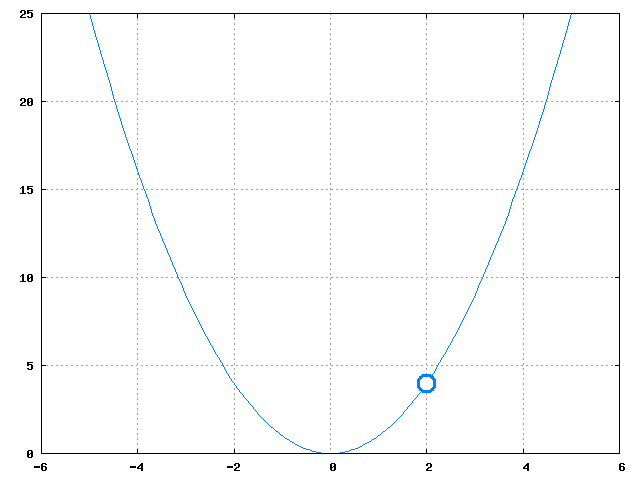
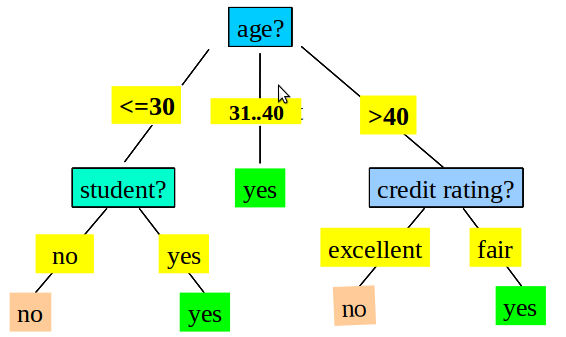
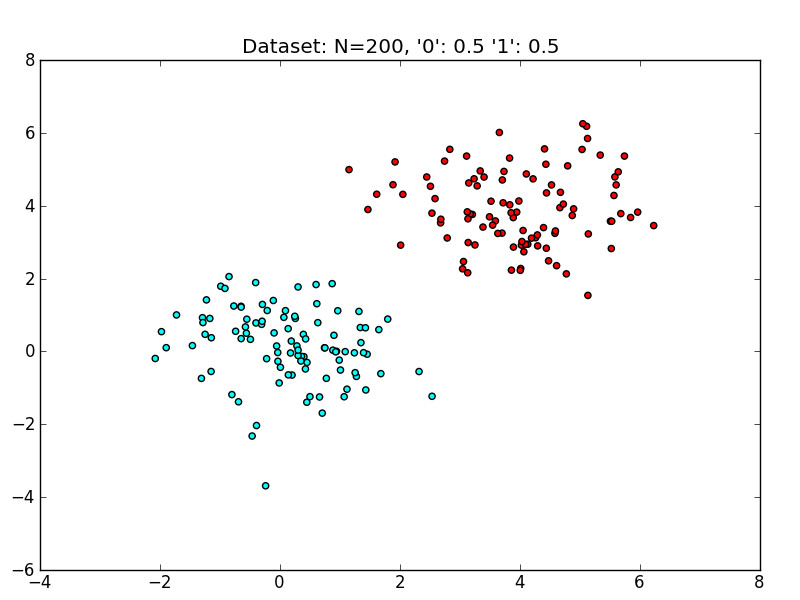
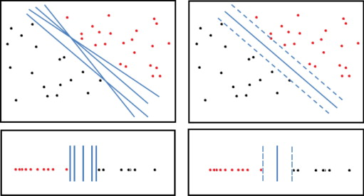
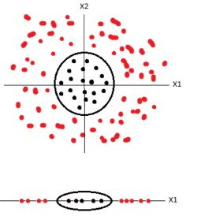
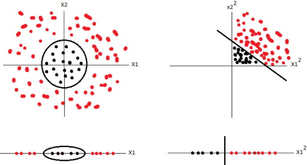

2013-03-01-SVM
Table of Contents
- 1 Linear Regression
- 2 Types of Models
- 3 Case Study
- 4 Solution?
- 5 Similarity
- 6 Point Distance
- 7 Aggregate
- 8 Fitness Function
- 9 Understanding Error
- 10 Solution as Minimization
- 11 Solution Approximation
- 12 Gradient Descent
- 13 General Case
- 14 Support Vector Machines
- 15 Decision Trees
- 16 Possibilities
- 17 Dimensions
- 18 Expressing the Hyperplane
- 19 Challenge
- 20 Maximizing Fitness Function
- 21 Kernel Tricks
- 22 Break
1 Linear Regression
2 Types of Models animate
- Classifiers
- Regressions
- Clustering
- Outlier
2.1 Details notes
- Classifiers
- describes and distinguishes cases. Yelp may want to find a category for a business based on the reviews and business description
- Regressions
- Predict a continuous value. Eg. predict a home's selling price given sq footage, # of bedrooms
- Clustering
- find "natural" groups of data without labels
- Outlier
- find anomalous transactions, eg. finding fraud for credit cards
3 Case Study
- Housing prices: square footage

3.1 Problem notes
- We'd like to know how to price a house based on the square footage
- Let's pretend this is the data we have
- How would we guess that value for 2500 sq ft?
4 Solution? animate
- Find a line that represents the data
y = m*x + b- A line that is not very far from the points
4.1 Prompts notes
- In English, how would you solve this?
- How to mathematically represent the line?
- What is a good line?
5 Similarity
- Main challenges in data mining: defining a specific metric for an intuition
- Define distance for an individual point
- Define how to aggregate distances together
5.1 Challenge notes
- This is big problem for engineering and math (stats) in general
- We'll cover some concepts, but if you're ever stuck, try looking in related fields
- What are some of the ways we can measure distance between points? Euclidian, Manhattan, Euclidian == L2 norm
- What is a way to aggrgate numbers? sum, sum of squares, sum of logs
- Differences between the last two?
5.2 Log & Square two_col
- Log
- Useful for de-emphasizing large raw differences
- Square
- Useful for taking the approximate absolute value

6 Point Distance two_col
ydistance from line- Intuitively: error in estimate
h(x) = m*x + berr = h(x) - y

6.1 Error notes
- We want the difference from what we estimate to be the value to what the value actually is
7 Aggregate animate
sum- What about negative error?
- Sum of squares
err = sum( (h(x) - y)**2 for x,y in dataset) / len(dataset)
7.1 Questions notes
- Now we have info about all the errors from points, how to summarize?
- Some points have negative error, some positive? Do they cancel each other out?
- Imagine data set of two points: one solutions covers lines, other divides them. Which is better?
- Use our squaring trick to make sure we don't have any negative values
- Normalize by the number of points
8 Fitness Function
- Measures the quality or cost of the solution
- Key ingredient for data mining algorithms
- If you can measure it, you can find the best solution
8.1 Fitness notes
- Function spits out a metric. Metric can be thought of as fitness or cost
- Find the maximum or minimum of that metric
- Depending on your fitness function, this can be easy or difficult
- img: http://onlinestatbook.com
9 Understanding Error
 Several possible solutions
9.1 Error notes
- What happens to the error as we move line around?
- Decreases until best fit, then increases
- What happens if we plot this error? Say, slope (x) against error (y)?
10 Solution as Minimization two_col
- Error is a parabola
- Several methods for finding the minimum
- Two categories: analytical, approximations

11 Solution Approximation
- Some fitness functions can be difficult to solve analytically
- Alternative: iteratively get closer to the solution
- Stop when answer is close enough
11.1 Analytical notes
- How to find the minimum of functions in general?
- Take derivative, find 0
- Taking derivative can be complex or impossible (discontinuities) for some functions, or solving for 0 is difficult
- Instead, well keep getting closer to the minimum using the function we already have
12 Gradient Descent two_col
- Estimate current gradient (derivative)
- Take a step (
a * deriv) in the direction of the gradient - Step size is small, stop. Else repeat.
12.1 Steps notes
- Take gradient by looking at the local derivative, or perturbating x
- Choose
aas step size weight: bigais large step size - If
derivis large, will also make you step size large. - If
derivis large, probably means you are far away from minimum - Keep repeating
- What happens if
ais too small? - What happens if
ais too big?
13 General Case two_col
- Formulate fitness function for your problem
- Use analytics or approximations to find min/max
- Approximations: Newton's Method, Gradient Descent

13.1 Approximate visualization notes
- Desired output of the error as gradient descent runs
- maybe some local problems, as step size is too big, but slowly move down to a small amount of error
14 Support Vector Machines
15 Decision Trees two_col
- Great for separable attributes
- Rules operate on independent attributes
- Classes separable along an axis/attribute

15.1 Linearly Separable
- How to handle case where separator line is not along an axis?

15.2 Details notes
- Could say if
x>2andy>2, but not a great intuitive fit - Draw a line that takes both into account
y = m*x + b- img: http://www.eric-kim.net/eric-kim-net/posts/1/kernel_trick.html
16 Possibilities
- Many lines could separate these classes
16.1 Best? notes
- Which is the best?
- Why?
16.2 Best Separator two_col
- Best line gives the most distance between the two classes
- Measure distance between closest points
- Closest points == support vectors

16.3 Points, Vectors notes
- Points can be represented as vectors
- Vector math can be easier to express succinctly
- img: http://www.sciencedirect.com/science/article/pii/S1072751511001918
17 Dimensions
- When separating two dimensions, we need a line
- When separating 3 dimensions?
- 4 dimensions?
17.1 Vocabulary notes
- Plane
- Hyperplane
18 Expressing the Hyperplane animate
y = m*x + bx_2 = m*x_1 + b0 = m*x_1 + b - x_20 = [m -1] * [x_1, x_2] + b0 = w * x + b
18.1 Questions notes
- How do you mathematically represent a line?
- Now, we're not going to think of a new letter for every dimension, we're just going to say x1 , x2 , x3 …
- Rewrite mathematically
- How to add more dimensions? x22? Express x as a vector of all attributes
- Again, don't want to come up with a bunch more letters after
m, so usewas the matrix representing all themslopes
19 Challenge two_col
- Find
w,bsuch thatw * x + bmaximizes the distance between the support vectors

20 Maximizing Fitness Function two_col
- Now we have a fitness function and parameters we're trying to optimize
- Sound familiar?
21 Kernel Tricks two_col
- SVM good for linearly separable data
- How to handle other data?

21.1 Polynomial Kernel
- Transform it into linearly separable
- What function can we apply to these data points to make them separable?
21.1.1 Square notes
- Square all of them
21.2 Polynomial Kernel

Now apply SVM